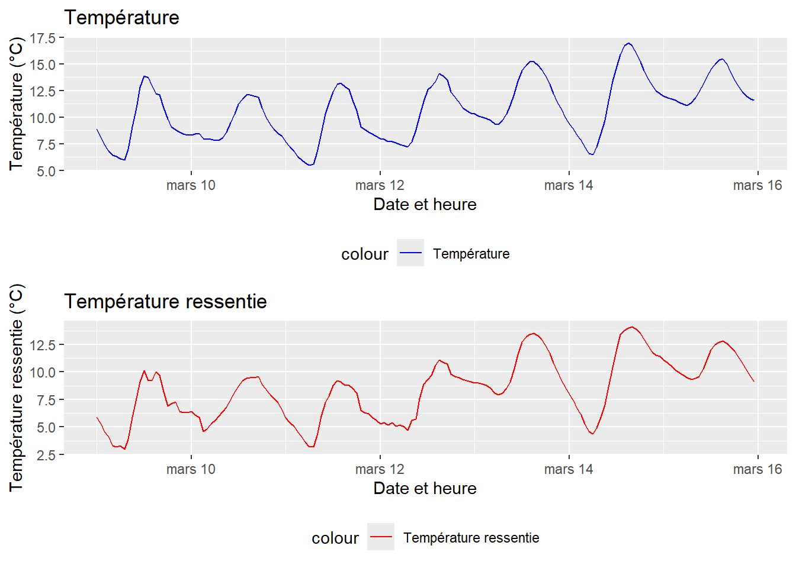
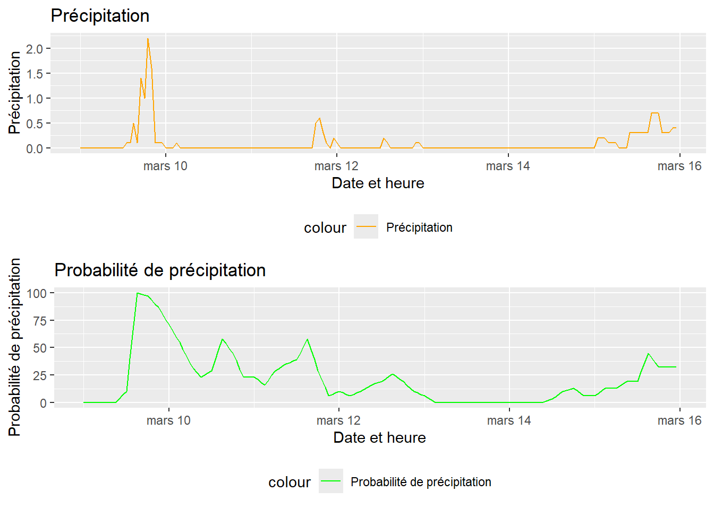
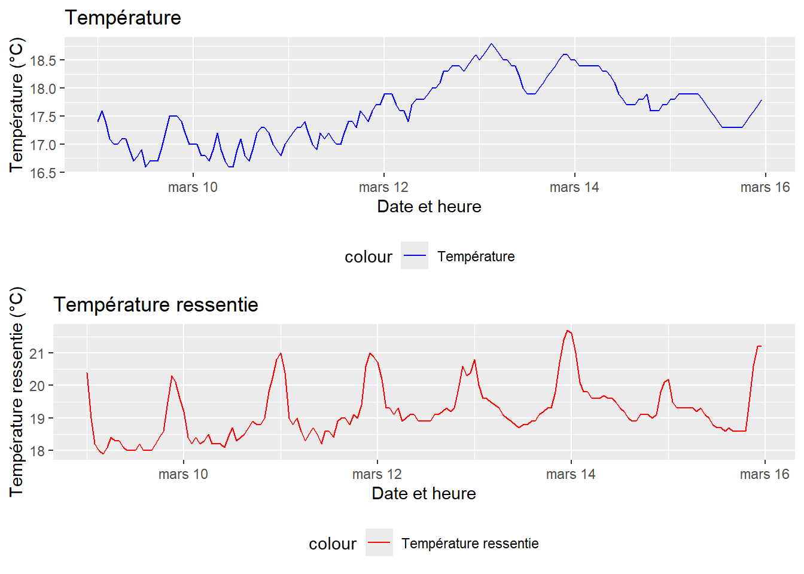
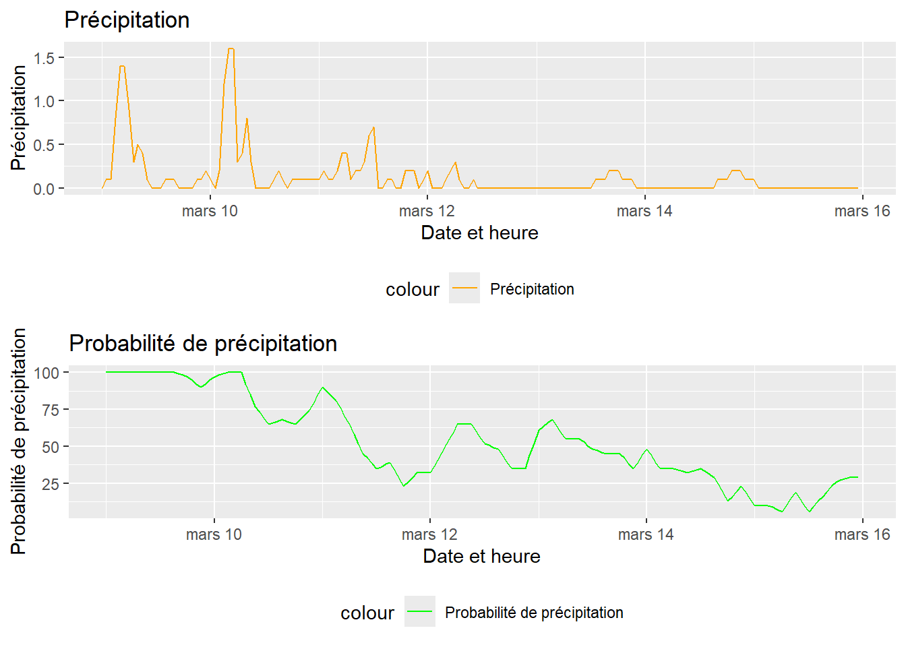
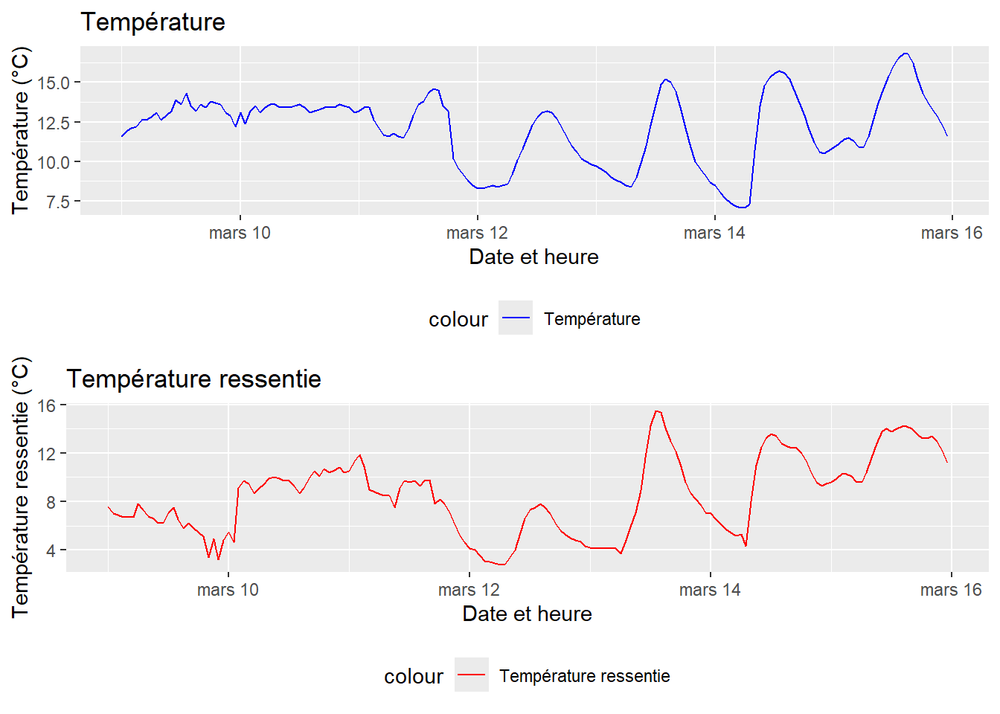
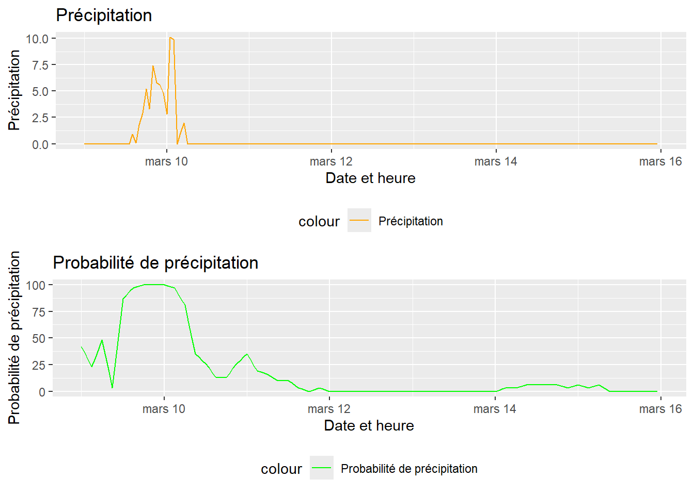

remotes::install_github("Cassandreorhan/olympicsWeather")Librairie olympicsWeather
Le package olympicsWeather est une bibliothèque R qui fournit des fonctionnalités pour accéder aux données météorologiques des sites où se dérouleront les Jeux olympiques 2024 à Paris.
Introduction
Le package olympicsWeather offre une manière pratique d’accéder aux données météorologiques des Jeux olympiques pour les analyses et la visualisation. Il contient des fonctionnalités pour récupérer les données météorologiques à partir de sources fiables et les manipuler dans un format adapté à l’analyse.
Installation
Pour installer le package olympicsWeather depuis GitHub, vous pouvez utiliser le package remotes. Voici les étapes à suivre :
Le package est à présent installé, dans la suite nous allons découvrir pourquoi et comment l’utiliser.
Prévision pour le Stade de France
Ce package olympicsWeather peut être utile si vous souhaiter obtenir les prévisons météo du Stade de France pour une semaine, du 9 mars au 15 mars 2024. Dans un premier temps, il faut appeler la librairie du package :
library(olympicsWeather) Ensuite, nous pouvons commencer à l’utiliser, donc on appelle la fonction “get_weather_forecast” qui permet d’obtenir dans un tableau les prévision météos selon la date/heure, la température en Celsius, la température ressentie, les précipitations et les probabilités de précipitation.
prevision_stade_france <- olympicsWeather::get_weather_forecast("Stade de France")
knitr::kable(head(prevision_stade_france))| date_heure | temperature_celsius | temperature_ressentie_celsius | precipitation_proba | precipitation |
|---|---|---|---|---|
| 2024-03-09T00:00 | 8.9 | 5.9 | 0 | 0 |
| 2024-03-09T01:00 | 8.1 | 5.3 | 0 | 0 |
| 2024-03-09T02:00 | 7.4 | 4.6 | 0 | 0 |
| 2024-03-09T03:00 | 6.8 | 4.1 | 0 | 0 |
| 2024-03-09T04:00 | 6.4 | 3.3 | 0 | 0 |
| 2024-03-09T05:00 | 6.3 | 3.2 | 0 | 0 |
Afin de mieux visualiser notre prévision, nous pouvons faire appel à une autre fonction du package “visualize_weather_forecast”, elle prend en entrée la localisation souhaitée et retourne deux pages de représentation visuelle selon les tempétatures et les précipitations.
visualize_weather_forecast("Stade de France")

Ainsi, le stade de france enregistrera des températures fluctuantes durant cette semaine avec un pic de chaleur le 13 mars d’environ 18 degrés Celsius. Concernant les précipitations, la probabilité d’avoir de la pluie le 9 mars à 18h est forte, 94% mais la pluviométrie la plus importante sera le 10 mars entre 16h et 17h puisqu’on attend 1,3 cm de précipitation.
Prévision pour Tahiti
Maintenant, si vous souhaitez obtenir les prévisions météos pour Tahiti qui accueillera en discipline olympique les épreuves de surf, voici comment vous pouvez procéder.
Dans un premier temps, de la même façon que pour le stade de France, vous pouvez utiliser la fonction “get_weather_forecast” pour obtenir les prévisions sous forme de tableau.
prevision_tahiti <- get_weather_forecast("Tahiti")
knitr::kable(head(prevision_tahiti))| date_heure | temperature_celsius | temperature_ressentie_celsius | precipitation_proba | precipitation |
|---|---|---|---|---|
| 2024-03-09T00:00 | 17.4 | 20.4 | 100 | 0.0 |
| 2024-03-09T01:00 | 17.6 | 19.0 | 100 | 0.1 |
| 2024-03-09T02:00 | 17.4 | 18.2 | 100 | 0.1 |
| 2024-03-09T03:00 | 17.1 | 18.0 | 100 | 0.8 |
| 2024-03-09T04:00 | 17.0 | 17.9 | 100 | 1.4 |
| 2024-03-09T05:00 | 17.0 | 18.1 | 100 | 1.4 |
Nous pouvons à présent utiliser la fonction “visualize_weather_forecast” afin de visualiser graphiquement nos prévisions.
visualize_weather_forecast("Tahiti")

Ainsi, Tahiti enregistrera des températures fluctuantes durant cette semaine avec un pic de chaleur le 13 mars d’environ 18,6 degrés celsius. Concernant les précipitations, la probabilité d’avoir de la pluie le 10 mars à 3h est forte, 100et c’est également l’heure où la pluviométrie sera la plus importante puisqu’on attend 1,9 cm de précipitation à cette date.
Pour les coordonnées GPS 43.276703, 5.334791
Enfin, si vous souhaitez obtenir des prévisions météos des coordonnées GPS avec comme exemple les coordonnées 43.276703, 5.334791 , voici comment vous pouvez procéder.
Dans un premier temps, de la même façon que pour les prévisions précedentes, vous pouvez utiliser la fonction “get_weather_forecast” pour obtenir les prévisions sous forme de tableau.
prevision_lat_long<-get_weather_forecast(c(43.276703, 5.334791))
knitr::kable(head(prevision_lat_long))| date_heure | temperature_celsius | temperature_ressentie_celsius | precipitation_proba | precipitation |
|---|---|---|---|---|
| 2024-03-09T00:00 | 11.6 | 7.6 | 42 | 0 |
| 2024-03-09T01:00 | 11.9 | 7.0 | 36 | 0 |
| 2024-03-09T02:00 | 12.1 | 6.9 | 29 | 0 |
| 2024-03-09T03:00 | 12.2 | 6.7 | 23 | 0 |
| 2024-03-09T04:00 | 12.6 | 6.7 | 31 | 0 |
| 2024-03-09T05:00 | 12.6 | 6.7 | 40 | 0 |
Nous pouvons à présent utiliser la fonction “visualize_weather_forecast” afin de visualiser graphiquement nos prévisions.
visualize_weather_forecast(c(43.276703, 5.334791))

Ainsi, ces coordonnées GPS, qui correspondent au Parc national des Calanques à Marseille, enregistreront des températures fluctuantes durant cette semaine avec un pic de chaleur le 15 mars d’environ 17 degrés Celsius. Concernant les précipitations, la probabilité d’avoir de la pluie le 9 mars de 15h à minuit est forte, 100% et c’est égalementà cette date que la pluviométrie sera la plus importante puisqu’on attend 9,8 cm de précipitation entre 22h et 23H .